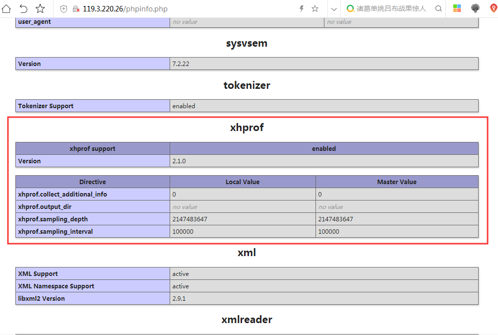
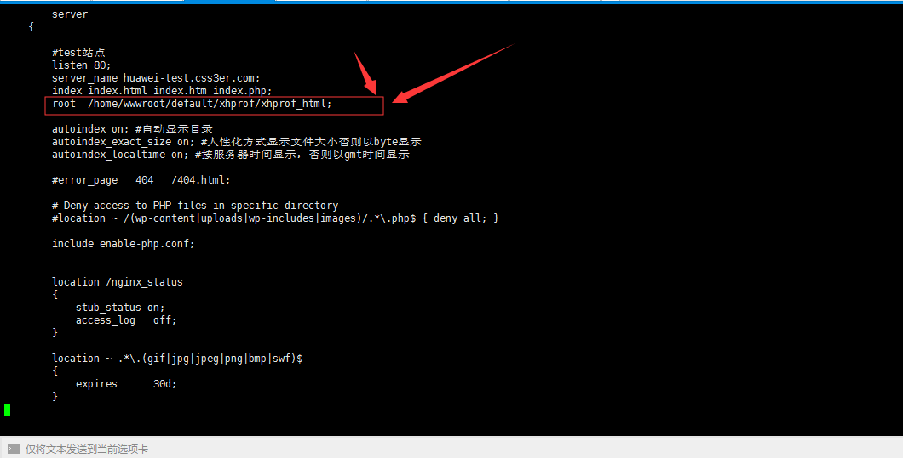
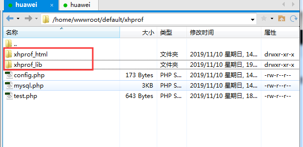
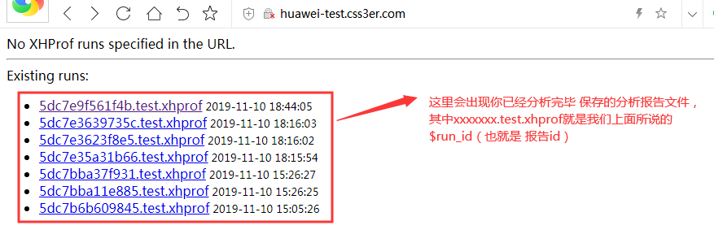
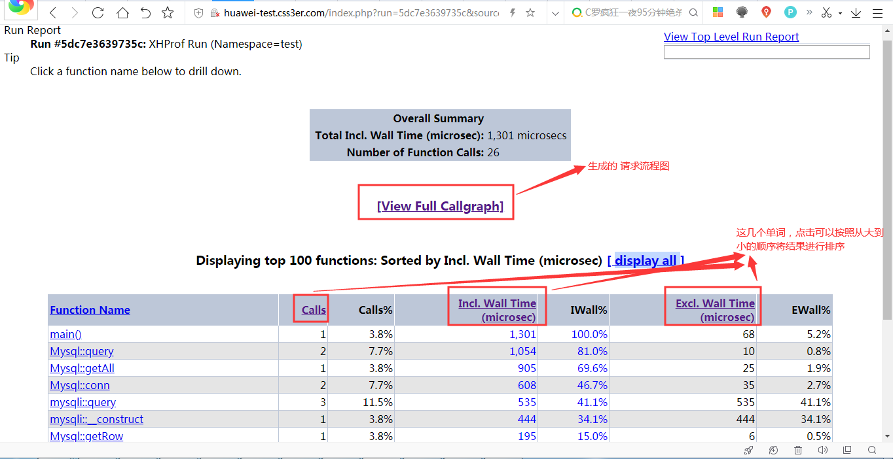
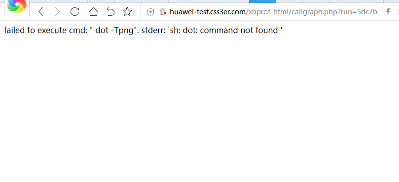
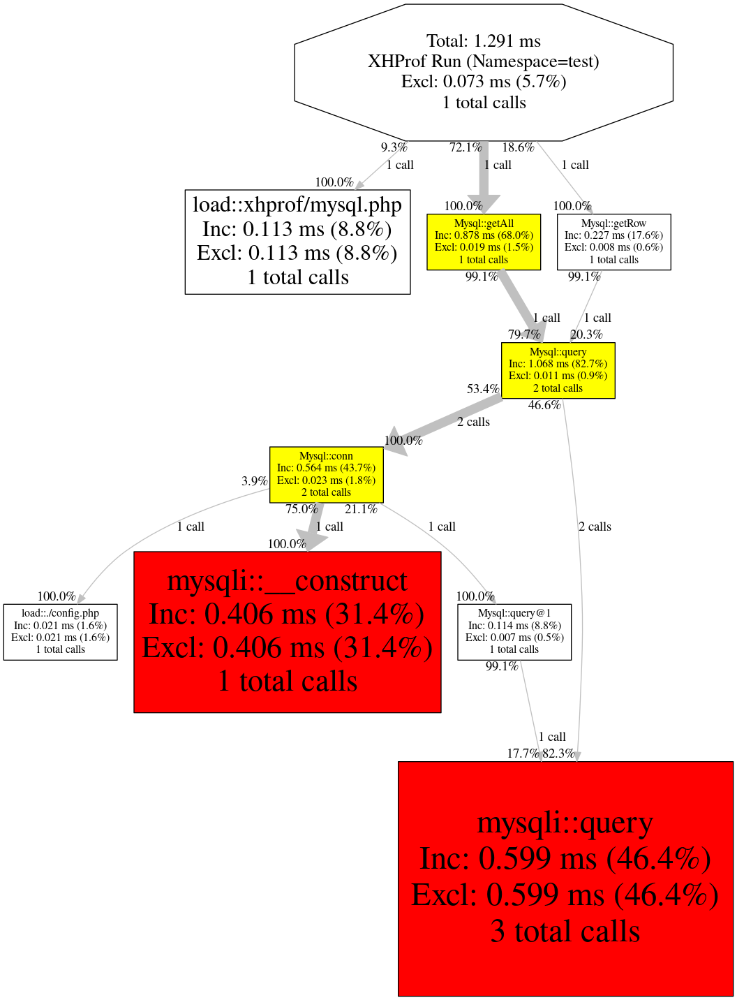

本篇博文所使用的环境如下：
PHP版本：php7.2
操作系统环境：CentOS Linux release 7.7.1908 (Core)
前言概述
你和别人同时写出了一个导出用户的功能，你的导出一次用了20分钟，而别人的导出用户功能只用了1分钟，那么这里就很明显的区分出来了你们代码的效率。代码的优劣是问题的根源。如果你想找出是什么原因导致代码执行这么慢，那么你就要学会怎么分析代码性能，找到代码瓶颈。
我们除了可以使用xdebug分析php的性能之外，还可以使用xhprof进行分析php的代码性能。
xhprof工具的简介
xhprof是由facebook开源出来的一个php轻量级的性能分析工具，跟xdebug类似，但性能开销更低，还可以用在生产环境中，也可以由程序开关来控制是否进行profile。但是官方因为长时间不更新，针对php7已无法正常安装使用。
对于还在使用php5的童鞋，可以到php官方进行下载安装：
https://pecl.php.net/package/xhprof
php7系列的xhprof扩展可以在以下地址进行下载安装：
https://github.com/longxinH/xhprof // xhprof的开源地址（这是第三方的一个库，并不是xhprof官方的。xhprof官方暂不支持php7系列）
xhprof版本下载地址：https://github.com/longxinH/xhprof/releases
xhprof安装
1 2 3 4 5 6 7 8 9 10 11 12 13 14 | wget https://github.com/longxinH/xhprof/archive/v2.1.0.tar.gz tar -zxvf v2.1.0.tar.gz cd xhprof-2.1.0/ cd extension/ phpize ./configure --with-php-config=/usr/bin/php-config #这里的php-config路径换成你自己的 make && make install #ps：如果你wget不下来,文件末尾我会给出相关文件的,自行下载并上传到自己的服务器进行解压,然后进行一系列的安装即可。 |
以上步骤完成之后在php.ini中增加如下配置：
1 2 3 | [xhprof]extension=/usr/lib64/php/modules/xhprof.so #xhprof.so文件路径换成你自己的xhprof.output_dir=/tmp/xhprof |
接着在/tmp目录创建一个xhprof文件夹，并赋予777权限，用来保存xhprof分析所得出的日志文件
1 2 3 | mkdir /tmp/xhprof/chmod -R 777 /tmp/xhprof/ #这里就直接省事给777了。。 |
注意：
①、./configure 不一定需要增加--with-php-config，只有当服务器有多个版本php的时候，或者php-config没有在/usr/bin的时候才需要指定php-config文件的路径位置
②、xhprof的output_dir配置项需要可读可写的权限，我们在上面已经配置过了。xhprof.output_dir是xhprof的输出目录，每次执行 xhprof的save_run方法时都会生成一个 run_id.project_name.xhprof 文件。这个目录在哪里并不重要（按照本文的配置，目前该目录的位置在/tmp/xhprof/）。注意此路径的权限要可读写！否则文件无法生成成功。
xhprof是否安装成功的验证
如果你的phpinfo中有显示xhprof扩展信息，则说明安装成功。
安装成功示例截图如下：

简单使用
xhprof工具需要引入2个类库：
还记得之前下载的源码吧？把里面的xhprof_lib目录复制一份儿，复制到你的项目目录中，并且在你需要分析的php代码中进行引入（你需要在哪里进行分析php代码性能，就在哪里的php代码中引入下面这2个文件）：
1 2 | include_once '/home/wwwroot/default/xhprof/xhprof_lib/utils/xhprof_lib.php';include_once '/home/wwwroot/default/xhprof/xhprof_lib/utils/xhprof_runs.php'; |
开启性能分析：使用 xhprof_enable() 函数
1 2 3 4 5 6 7 8 9 10 11 12 13 | xhprof_enable(XHPROF_FLAGS_CPU|XHPROF_FLAGS_MEMORY|XHPROF_FLAGS_NO_BUILTINS);//XHPROF_FLAGS_NO_BUILTINS (integer)//使得跳过所有内置（内部）函数//XHPROF_FLAGS_CPU (integer)//使输出的性能数据中添加 CPU 数据//XHPROF_FLAGS_MEMORY (integer)//使输出的性能数据中添加内存数据//当然了,这些预定义常量是可选的,不写也可以,直接在相关php代码块中调用 xhprof_enable(); 即可 |
关闭性能分析：使用 xhprof_disable() 函数，并将分析的结果保存起来
1 2 3 4 5 6 | $data = xhprof_disable(); //关闭性能分析$obj_xhprof_run = new XHProfRuns_Default();$run_id = $obj_xhprof_run->save_run($data, "test"); //把性能分析的报告保存到output_dir目录var_dump($run_id); //$run_id是本次报告的一个报告id,用来标识本次报告的唯一性,相当于数据表中的主键id,下面查看性能的时候会用到这个$run_id |
xhprof工具的完整使用示例代码如下：
1 2 3 4 5 6 7 8 9 10 11 12 13 14 15 16 17 18 19 20 21 22 23 24 25 26 27 28 29 | <?phpinclude_once '/home/wwwroot/default/xhprof/xhprof_lib/utils/xhprof_lib.php';include_once '/home/wwwroot/default/xhprof/xhprof_lib/utils/xhprof_runs.php';xhprof_enable(); //开启性能分析检测include_once './mysql.php';$sql = "SELECT * FROM employee";$sql_one = "SELECT * FROM employee WHERE id = 3";$result = Mysql::getAll($sql);$row = Mysql::getRow($sql_one);//echo "<pre>";//print_r($result);//echo "<hr/>";//print_r($row);$data = xhprof_disable(); //关闭性能分析$obj_xhprof_run = new XHProfRuns_Default();$run_id = $obj_xhprof_run->save_run($data, "test"); //保存性能分析报告var_dump($run_id); //输出本次性能分析的报告id |
然后访问一下该文件，就会记录该文件的php代码的性能分析报告。
查看性能分析：
还记得之前下载的源码吧？把里面的 xhprof_html 目录复制出来，单独做成一个目录，并通过nginx或apache配置成一个可访问的站点目录：
示例截图如下：

并且把之前的 xhprof_lib 复制一份到同级目录（也就是说 xhprof_lib 和 xhprof_html 这两个文件夹是在同一个目录下，也就是同级的关系），目录示例截图如下：

接下来，我们访问这个站点：

上图中可以看到，会显示出所有的你已经分析完毕，并保存的分析报告文件，其中xxxxxxx.test.xhprof就是我们上面所说的$run_id（也就是 报告id）。
点击其中一个进行查看：

如上图所示，这样就可以查看到所有代码执行的cpu消耗，执行时间，占用情况了,根据这份数据，去优化最耗时间的代码就可以了。其中Calls、Incl. Wall Time(microsec)、Excl. Wall Time(microsec)这三个单词，点击 可以将下面显示的结果进行降序排序。
根据上图显示的结果，这里列举一些常用的名词的解释：
Function Name：方法名称。
Calls：方法被调用的次数。
Calls%：方法调用次数在同级方法总数调用次数中所占的百分比。
Incl.Wall Time(microsec)：方法执行花费的时间，包括子方法的执行时间。（单位：微秒）
IWall%：方法执行花费的时间百分比。
Excl. Wall Time(microsec)：方法本身执行花费的时间，不包括子方法的执行时间。（单位：微秒）
EWall%：方法本身执行花费的时间百分比。
Incl. CPU(microsecs)：方法执行花费的CPU时间，包括子方法的执行时间。（单位：微秒）
ICpu%：方法执行花费的CPU时间百分比。
Excl. CPU(microsec)：方法本身执行花费的CPU时间，不包括子方法的执行时间。（单位：微秒）
ECPU%：方法本身执行花费的CPU时间百分比。
Incl.MemUse(bytes)：方法执行占用的内存，包括子方法执行占用的内存。（单位：字节）
IMemUse%：方法执行占用的内存百分比。
Excl.MemUse(bytes)：方法本身执行占用的内存，不包括子方法执行占用的内存。（单位：字节）
EMemUse%：方法本身执行占用的内存百分比。
Incl.PeakMemUse(bytes)：Incl.MemUse峰值。（单位：字节）
IPeakMemUse%：Incl.MemUse峰值百分比。
Excl.PeakMemUse(bytes)：Excl.MemUse峰值。单位：（字节）
EPeakMemUse%：Excl.MemUse峰值百分比。
也可以查看请求执行的流程图：
上面那个图中，有一个 [View Full Callgraph] 点击这里，可以查看该分析报告的请求执行流程图，如果点击之后报如下错误：
1 | failed to execute cmd: " dot -Tpng". stderr: `sh: dot: command not found ' |

说明服务器没有安装画图软件 graphviz，centos系统直接使用：yum -y install graphviz 一键安装即可。
点击 [View Full Callgraph] 之后的示例截图如下：

如上图所示，xhprof会通过 黄色，红色，以及一根比较粗的灰色的线，为我们标识出主要的耗时路线。调用红色是耗时最大的函数调用，通过分析这个图片我们可以看出哪里耗时长，从而有针对性的去做优化。
本文所使用的相关文件： 相关文件.zip
相关文件.zip
如果你要使用本文的相关文件，请下载解压之后，自行调整适合你自己的对应的文件路径。
本文介绍的只是xhprof工具在linux上如何使用，xhprof在windows上如何使用可参考以下链接：
https://www.cnblogs.com/qq917937712/p/8889001.html
https://www.cnblogs.com/buexplain/p/4821619.html
今天进步一点点，明天梦想近点点！
声明：禁止任何非法用途使用，凡因违规使用而引起的任何法律纠纷，本站概不负责。
![]()


精彩评论